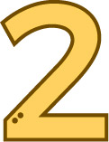

나의 궁합 코드 : 0111
나랑 잘 맞는 코드 : 1110, 1100 / 안 맞는 코드 : 1001
- 콩깍지가 심하므로 좋아하는 사람에게 깊이 빠져드는 편입니다. 평소 사람을 좋아하기 때문에 편견이 없는 편이며 사랑을 할 때는 열정적이기 때문에 그만큼 빨리 식기도 한다는 단점이 있습니다. 솔직한 성격 때문에 좋아하는 사람에게는 적극적으로 다가가며 이것저것 퍼주지만 정작 본인에게 돌아오는 게 없다면 쉽게 상처를 받는 편입니다.
- 당신의 즉흥적이고 재미있는 제안을 좋아하며 거기에 계획과 구체성을 붙여주는 성격 유형과 잘 맞습니다. 그런 상대와는 서로의 부족함을 채워주는 상호보완의 관계가 될 수 있으므로 연애 상대로 아주 적합합니다.